Threat intelligence, triage, investigation and response in one platform that runs on your own systems, with the AI you choose, or none at all.
Edition 2 · October 2026
C.O.S.M.OWhy C.O.S.M.O
Why C.O.S.M.O
C.O.S.M.O turns a flood of alerts into decisions your team can stand behind.
Security teams drown in alerts, scattered intelligence and tools that do not talk to each other. C.O.S.M.O brings them into one place: it watches your network, compares what it sees with what the world knows about attackers, and guides your analysts from "something happened" to "it is handled, and we know who did what."
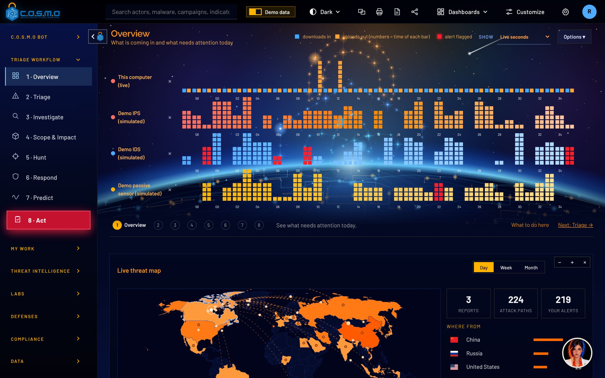
The OverviewLive activity from every source, the threat map, and a guide that tells each analyst what to do next.
It watches
Firewall, intrusion detection and server logs, cloud buckets, databases and your SIEM. Every address, domain and file fingerprint is checked against known threats.
It knows
MITRE ATT&CK, CISA's exploited-vulnerability catalog, ransomware leak sites, research blogs and your own feeds, kept as standard STIX 2.1.
It guides
Every page explains itself in plain language, and C.O.S.M.O Bot answers questions about your own data using the AI you connect.
8guided workflow steps
26intelligence sources built in
20+log formats read
0cloud accounts required
Cypher LLC · Bringing order to cyber operations02
C.O.S.M.OThe eight steps
One workflow
Eight plain steps take every incident from first alert to finished work.
Analysts never wonder what to do next. Each step answers one question and hands its result to the next, following the NIST incident-handling cycle with intelligence work on both sides.
Step
The question it answers
What your team leaves with
1 · Overview
Is anything unusual happening right now?
A short list of things worth a look
2 · Triage
Which of these alerts are real, and which matter most?
Every alert decided, with a reason
3 · Investigate
What actually happened, and how do we know?
A case with evidence and a conclusion
4 · Scope & Impact
Which of our machines are involved?
The affected hosts, weighted by importance
5 · Hunt
Is the same attacker anywhere else?
Hunts across all your data, findings filed as cases
6 · Respond
What do we block, isolate or reset?
Actions a person has approved
7 · Predict
What is this attacker likely to do next?
Predictions with evidence and a checklist
8 · Act
Who does what, by when?
A playbook where every action has an owner and a due time
Built for analysts at every levelA new analyst follows the guide on each page; an experienced one jumps straight to the step they need. Both leave the same clear record.
Cypher LLC · Bringing order to cyber operations03
C.O.S.M.OTriage
Triage
Triage separates what is real from what is noise, and shows why.
Repeated alerts are grouped into incidents, each with a priority score your analysts can read and question. Decisions teach C.O.S.M.O what your environment considers normal.
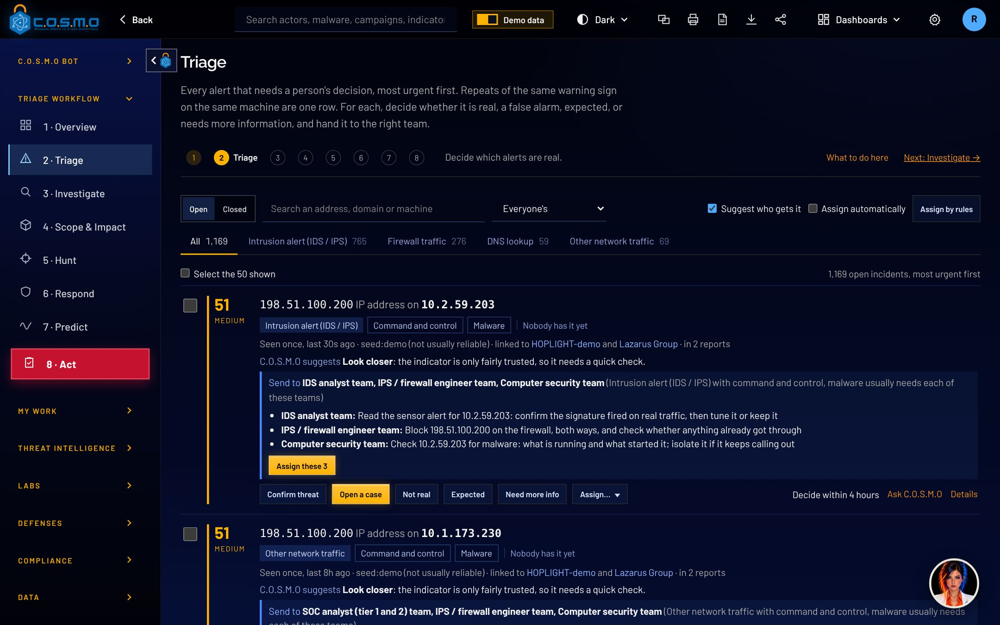
Step 2 · TriageIncidents ranked by a score that explains itself, with service-level timers and one-click decisions.
Faster decisions
Repeats grouped into one incident
A score that lists its reasons
Service-level timers per priority
Real, benign, false positive or needs more information
Smarter over time
Sources graded A to F for reliability
Machines weighted by how much they matter
Past decisions inform new ones
Every decision recorded with who and when
Cypher LLC · Bringing order to cyber operations04
C.O.S.M.OInvestigate and hunt
Investigate and hunt
Every investigation keeps the evidence, the reasoning and the people in one place.
When something is real, a case holds the questions, the evidence and the conclusion. Scope shows which machines are touched, and hunting finds the same attacker wherever else they are.
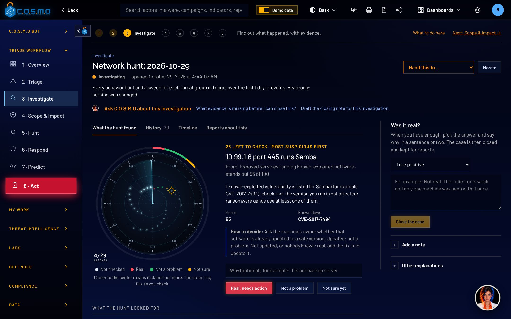
Step 3 · InvestigateA guided case: what to check, what was found, and a conclusion the whole team can read.
Investigate
Guided questions, evidence from your own logs and SIEM, and a plain-language opinion that stays consistent from analyst to analyst.
Scope & Impact
The affected hosts on a map of your network, weighted by how critical each one is, with the data quality behind every answer.
Hunt
ATT&CK-mapped hunts and Sigma, YARA, Suricata and Snort rules run across all your data, plus beaconing, DNS tunneling and generated-domain detection.
Cypher LLC · Bringing order to cyber operations05
C.O.S.M.ORespond and act
Respond and act
People stay in charge of every response, and every action has an owner.
C.O.S.M.O proposes the block, the isolation or the password reset. A person approves it. Then the work becomes a playbook with owners and deadlines, so nothing falls between teams.
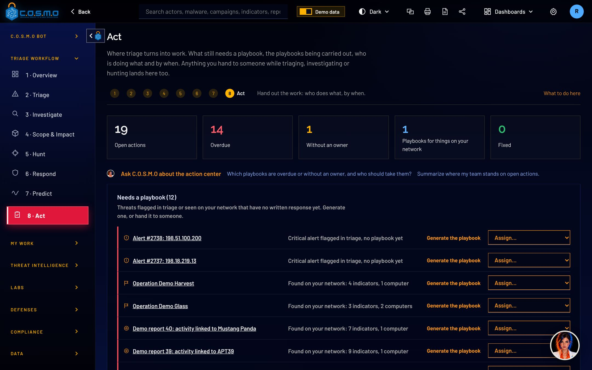
Step 8 · ActOne board for the whole team: what needs a playbook, what is in progress, and who is doing what.
Respond
Containment proposed from the evidence and approved by a person. AI and integrations can suggest; only a signed-in person can approve.
Predict
What this attacker is likely to try next, based on their known techniques, with a checklist to get ahead of it.
Act
Playbooks where every action has a phase, a duty, an owner and a due time, assigned from any step and tracked to done.
Cypher LLC · Bringing order to cyber operations06
C.O.S.M.OThreat intelligence
Threat intelligence
Threat intelligence arrives on day one and keeps itself current.
C.O.S.M.O collects open-source intelligence by itself on first start and refreshes it on schedule. Reports become structured knowledge you can explore, rank and tie to your own alerts.
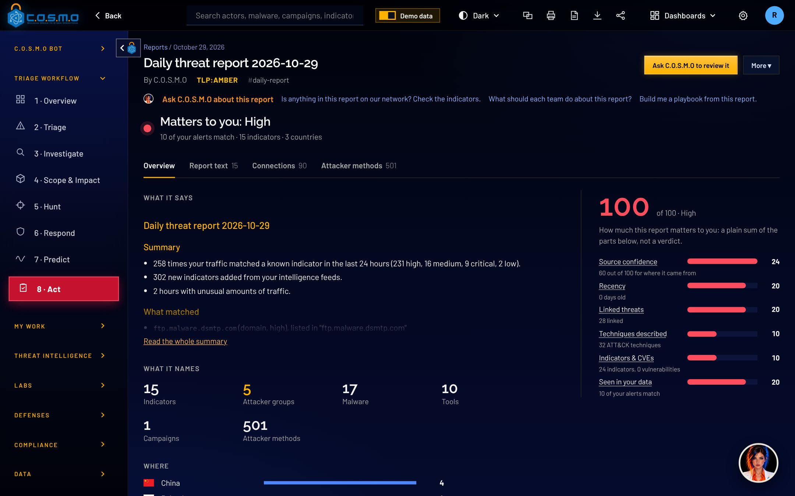
ReportsEach report broken into actors, malware, techniques and indicators, with a relationship graph and an ATT&CK timeline.
A knowledge base, not a pile of PDFs
Standard STIX 2.1 throughout
Threat Library of actors, malware, campaigns, tools and vulnerabilities
2D and 3D relationship graphs
Most-wanted and dark-web monitoring
Sources you already trust
MITRE ATT&CK, CISA KEV, abuse.ch
MISP, OTX and any TAXII 2.1 server
Research blogs and ransomware leak sites
Closed networks load intelligence from files
ATT&CK
KEV
Events
AlienVault
Any 2.1 server
Hash look-ups
Cypher LLC · Bringing order to cyber operations07
C.O.S.M.OMost Wanted
Most Wanted
Know your adversaries by name, before they know you.
The world's most dangerous hacking groups as wanted posters, under the names you see in the news. In the world ranks them by reach and activity; For you ranks the same groups for your sector, and any group seen in your own network goes to the top.
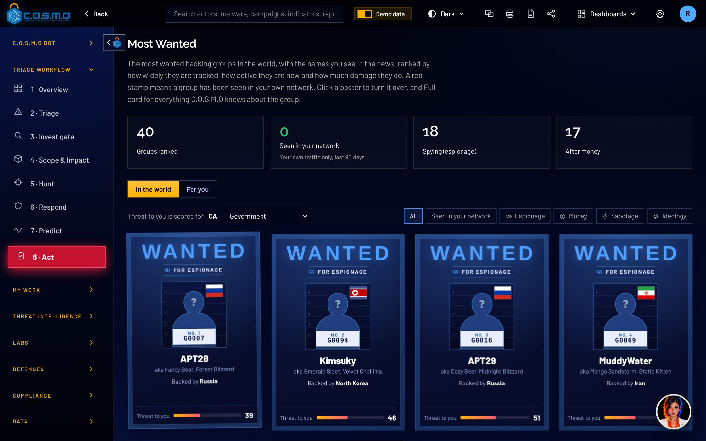
Most WantedEach poster's color is its motive: blue espionage, gold money, red sabotage, violet ideology. A red stamp means the group has been seen in your network.
Read it in seconds
Who they are, who backs them, why they attack and how big a threat they are to you, on one poster.
Turn it over
How they work step by step, their tools and techniques, the reports about them, and where they were seen in your data.
Hunt them now
One click sweeps all your data for every indicator and technique tied to that group, and files what it finds as a case.
Cypher LLC · Bringing order to cyber operations08
C.O.S.M.ODark Web
Dark Web
Find out when criminals name you, before your customers do.
Ransomware gangs name their victims on leak sites, and criminals sell stolen logins on underground forums. C.O.S.M.O reads those sources for you and checks every post against your watch list: your domains and your organization's names.
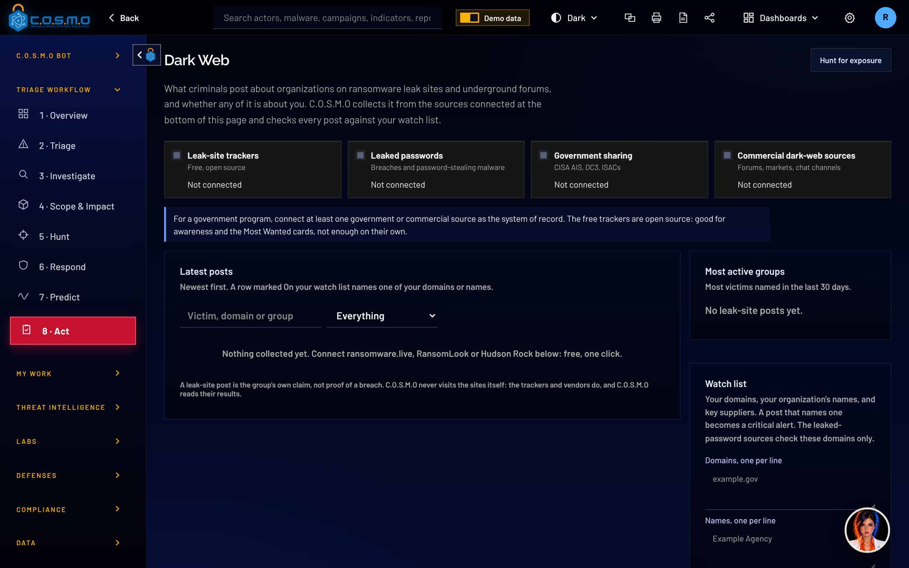
Dark WebLatest leak-site posts, the most active groups and your watch list. A match turns red and goes straight to Triage. Shown with sample data.
Leak sites
Victims posted by ransomware groups, from free trackers or the government and commercial sources you already use.
Stolen passwords
Computers infected by password-stealing malware that signed in to your domains, and your accounts in known breaches.
Straight to Triage
A match becomes a critical incident in Triage, with a one-click hunt to check whether the leaked logins are being used.
Cypher LLC · Bringing order to cyber operations09
C.O.S.M.OLabs
Labs
Suspicious files are taken apart safely, down to the code.
Drop a file, a script or a compiled program into the Malware Lab. C.O.S.M.O reads it without ever running it, and for a program it also takes the code apart with Ghidra, the NSA's free reverse-engineering tool, to show what the program can do.
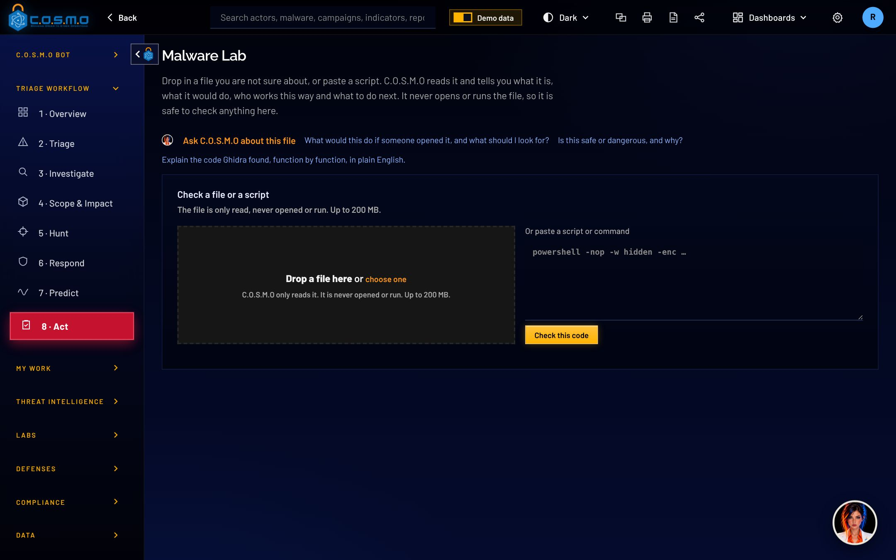
Malware LabDrop a file or paste a script. It is read, never run, and comes back as a one-page report.
A plain report
How dangerous it is, what it would do, where it would connect, who works this way, and what to do next.
The code, explained
What a program can do, each ability mapped to MITRE ATT&CK, signs of packing, and the code of its riskiest functions. C.O.S.M.O Bot explains it line by line.
Forensics too
Drop a collection from a computer and get one timeline of what happened, with what stands out flagged and tied to known groups.
Cypher LLC · Bringing order to cyber operations10
C.O.S.M.OSee it
See it
Complex threats become pictures your whole team understands.
Network discovery draws what is actually on your network and what is exposed. The knowledge graph shows how an attacker, their malware, their techniques and your alerts connect, in 2D or 3D.
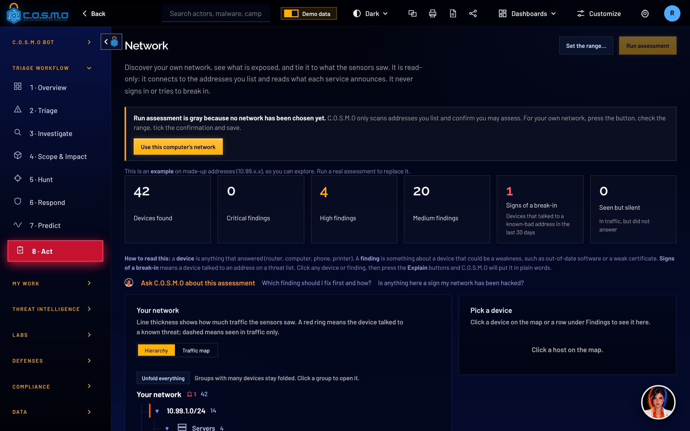
NetworkMachines found, open and weak services, and the hosts that talked to known threats, drawn as a map you can fold and unfold.
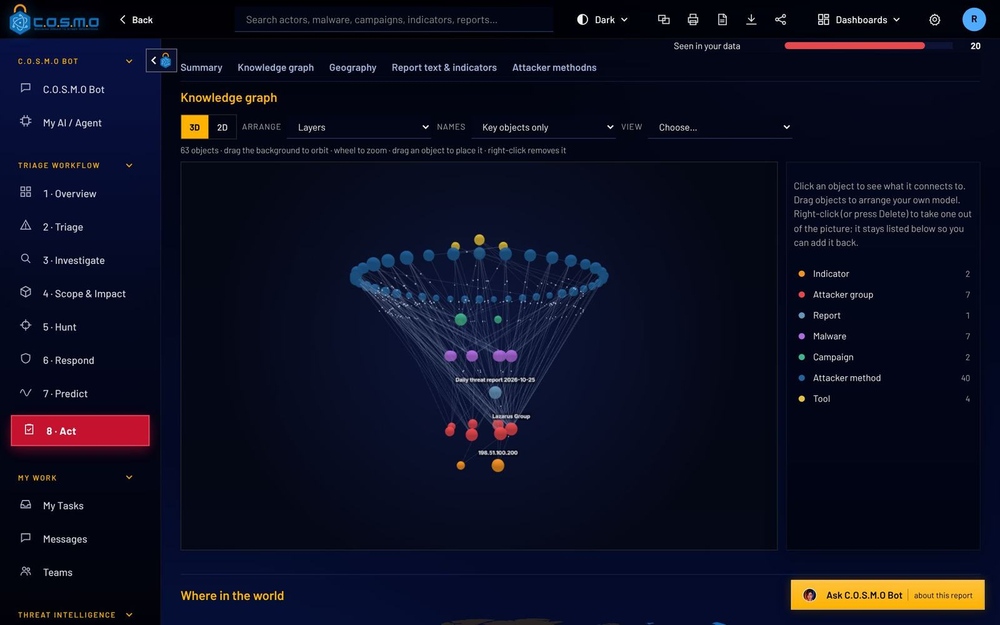
Knowledge graphEvery object in a report and how it connects. Rotate it, zoom in, drag objects into place, and click one to see what it touches.
Cypher LLC · Bringing order to cyber operations11
C.O.S.M.OLook ahead
Look ahead
Get ahead of attackers instead of only reacting to them.
C.O.S.M.O names the groups most likely to come after you next, shows how AI services are really used on your network, and checks the suppliers and services your organization cannot do without.
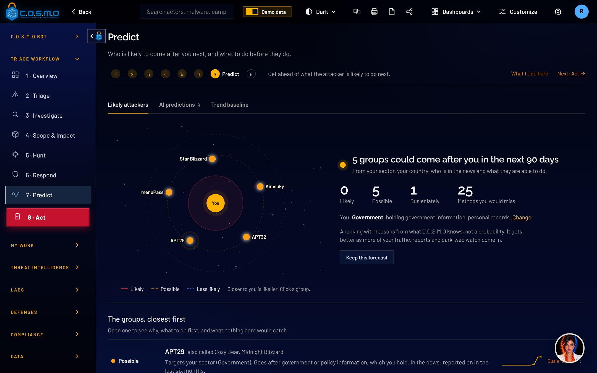
Who is coming nextThe groups most likely to target you in the next 90 days, why, whether they are getting busier, and what to do first.
Who is coming next
A ranked forecast with its reasons, kept every week and scored against what really turned up 90 days later.
AI use on your network
Which machines use which AI services, unapproved "shadow AI", large uploads and servers calling models. Never what anyone typed.
Your suppliers and services
Suppliers checked against leak sites, exploited flaws and leaked logins. Alerts say which service a machine runs and what depends on it.
Cypher LLC · Bringing order to cyber operations12
C.O.S.M.OProof, not promises
Proof, not promises
Show your assessor, your board and your insurer what really happened.
Detection rules are proven with harmless samples and approved by a person. Every incident keeps a timeline of decisions anyone can check was not edited. Every piece of intelligence says how sure it is.
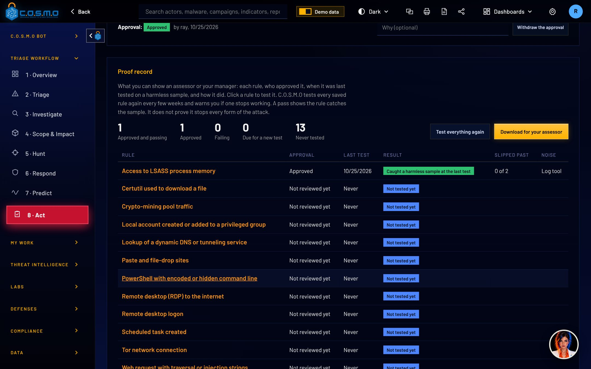
Proof of DefenseEvery rule with its last test, what slipped past, its noise on real traffic and who approved it.
Proof of Defense
Each rule tested with a harmless sample
Saved as proof and approved by a person
Re-tested on its own; a failure raises an alert
One download for your assessor
Incident timeline and record
Alert, decisions, approvals and actions in order
Other explanations weighed and recorded
A record with a fingerprint in the sealed log
Paste a copy back to check it was not edited
How sure are we
Every source behind a threat, how far it is trusted and where sources disagree, summed up in the code analysts already use (for example B2).
C.O.S.M.O Bot asks first
The bot can close a case, assign work or add a rule from chat, but every change waits for the person who asked to press Confirm.
Cypher LLC · Bringing order to cyber operations13
C.O.S.M.OAI you control
AI you control
C.O.S.M.O Bot works with the AI you choose, and your data stays yours.
Ask about any page, alert or report in plain English. C.O.S.M.O Bot answers from your own data, using your own Claude Code or Codex, a government cloud your agency already approved (Azure Government, Amazon Bedrock, GSA USAi or your own AI gateway), or a model running entirely on your own hardware.
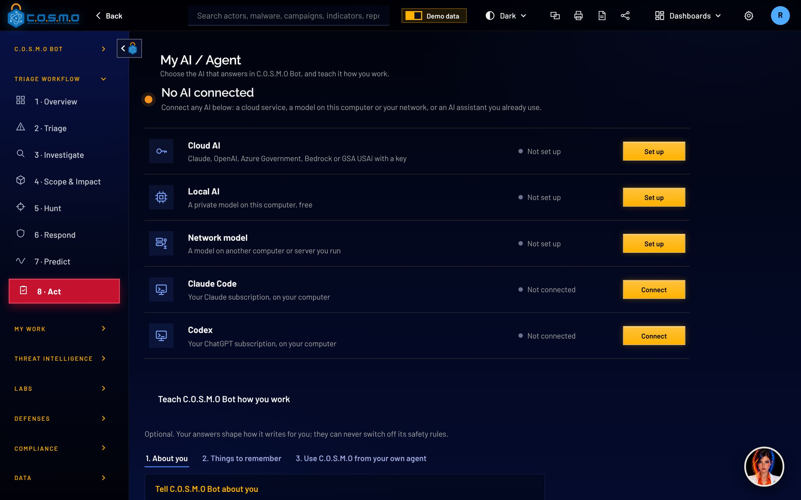
My AIConnect Claude Code or Codex, a cloud AI (Claude, OpenAI, Azure Government, Amazon Bedrock, GSA USAi or your agency's AI gateway), a model on this computer, or a model server on your network.
Anthropic
Claude Code
OpenAI · Codex
Azure Government
Amazon Bedrock
Ollama
Guardrails built in
Text inside reports is never treated as an instruction
Every change from chat waits for your Confirm
An approved-model policy, and never a model from China
Every question and tool call in the audit log
One connection for the whole team
Connect an AI once on the server
Every permitted account can use it
Run fully offline with a local model
Or switch AI off entirely; the platform still works
Cypher LLC · Bringing order to cyber operations14
C.O.S.M.OIntegrations
Integrations
C.O.S.M.O connects to the tools you already run.
No rip and replace. C.O.S.M.O reads from your SIEM, sensors, firewalls, databases and cloud storage, read-only by design, and speaks the open standards your partners use.
SIEM and network sensors
Splunk
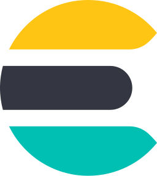
Elasticsearch
OpenSearch
Sentinel · Defender
IDS
NSM
Firewalls and security devices
Palo Alto
Fortinet
Cisco
R80+
pfSense
AWS security groups
Databases and cloud storage
PostgreSQL
MySQL
SQL Server
Databricks
Amazon S3
Azure Blob
Sign-in and notifications
Entra ID
Okta
Google
Slack
Teams
RSS · email
Agents and automationC.O.S.M.O also offers its tools to AI agents and scripts through MCP and a plain HTTP API, with per-key permissions and rate limits.
Cypher LLC · Bringing order to cyber operations15
C.O.S.M.OSecurity and compliance
Security and compliance
C.O.S.M.O is built for secure, regulated and classified environments.
A security platform is a target, so getting past one layer of C.O.S.M.O is never enough. Nothing leaves your systems unless you allow it.
Strong sign-in
CAC and PIV smart cards
Single sign-on (OIDC)
Two-step verification
Lock-out and idle sign-out
Right access for each role
Four roles, set by a super admin
Team duties on every account
Integration keys capped by role
Organizations kept apart
Evidence you can trust
Sealed audit log with source address
Tampering detected automatically
Every approval named and timed
Logs forwarded to your SIEM
Protected data
Secrets and backups encrypted
Keys in the system keychain
FIPS-approved algorithm mode
Encrypted, scheduled backups
Classified networks
Runs fully air-gapped
Classification banners and markings
TLP on all intelligence
Signed licenses and updates by file
Safe by construction
Connectors are read-only
Uploaded files never executed
Feeds cannot reach internal systems
Untrusted text cannot steer the AI
Checked against
Where it stands
SOC 2 security criteria, NIST 800-53
Controls mapped and tested in the build; ready for your auditor
OWASP Top 10 for web, API and AI apps
Each item reviewed, with tests that keep the fixes in place
Not yet listed; built ready to start the approval process
Your data stays where you put itNo cloud account needed. Offline mode loads intelligence from signed content packs, and every action is recorded with who did it and where they signed in from.
Cypher LLC · Bringing order to cyber operations16
C.O.S.M.ODeployment
Deployment
C.O.S.M.O runs wherever your data needs to stay.
The same software runs on one analyst's laptop, on a team server, across a large organization, or on a closed government network. Start small and grow: moving up is a backup and a restore.
Solo analyst
A desktop app for Mac, Windows or Linux with everything inside. Ideal for evaluation, a consultant's laptop or a small business.
Team server
One server the whole team opens in a browser, behind HTTPS. Accounts at every privilege level and one shared AI connection.
Large organization
Several servers sharing the load with automatic failover, read replicas and event storage spread across databases for high volume.
Air-gapped government
A closed network with smart-card sign-in, local AI on your own GPUs, classification banners, and licenses and updates delivered by file.
If you need…
Choose
To try C.O.S.M.O today
Solo analyst
A shared security operations center for a team or company
Team server
Very high event volume and high availability
Large organization
No internet, smart cards and classification markings
Air-gapped government
macOS
Windows
Linux
Docker
PostgreSQL
AWS
Cypher LLC · Bringing order to cyber operations17
C.O.S.M.OAt a glance
At a glance
Everything your security operations need ships in one platform.
No separate modules to buy and no cloud subscriptions to manage. C.O.S.M.O is one program and one database, with every capability below included.
Operations
Eight-step guided workflow
Incidents, cases and playbooks
Team duties, tasks and messages
Alert center with email and feeds
Dashboards you can share
Intelligence
26 open sources built in
STIX 2.1 knowledge base
Reports, graphs and timelines
Most Wanted and dark web
Forecast of who is coming next
Detection
Sigma, YARA, Suricata, Snort
Beaconing and DNS tunneling
Firewall rule analysis
Rules proven with samples
AI use and supplier checks
Malware Lab with Ghidra
AI
C.O.S.M.O Bot on every page
Hosted, agent or local models
Changes wait for your Confirm
Prompt-injection guard
Works without AI too
Data
20+ log formats
Syslog and file sensors
SIEM search in place
Read-only database mirrors
Amazon S3 and Azure storage
Governance
Roles, SSO, MFA, smart cards
Hash-chained audit log
Encrypted secrets and backups
Classification markings
Fully offline operation
See it with your own dataA pilot runs on a single laptop or a team server, with sample traffic or your own logs, so your analysts can judge C.O.S.M.O on real work.
Cypher LLC · Bringing order to cyber operations18
Bringing order to cyber operations
To arrange a demonstration or a pilot, contact Cypher LLC.